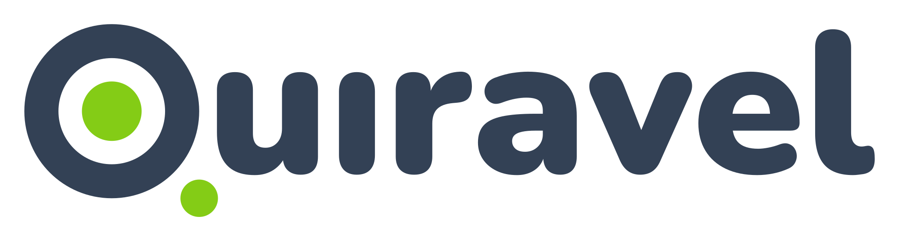
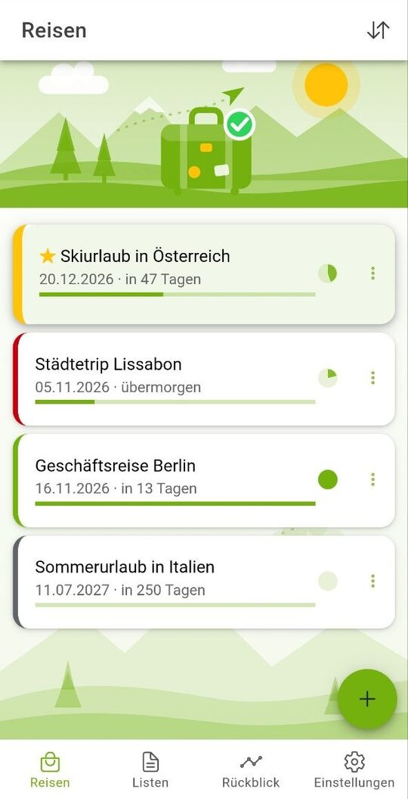
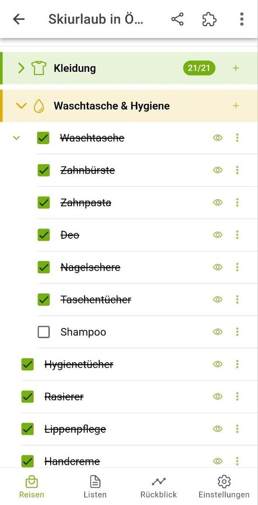
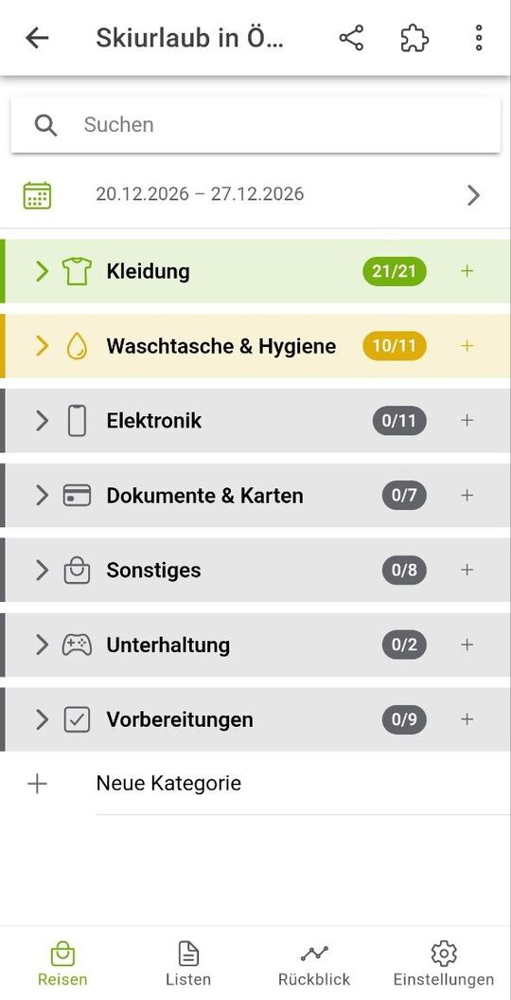
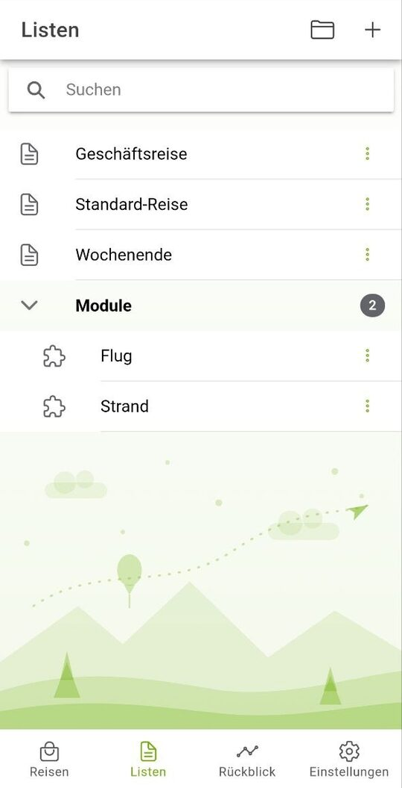
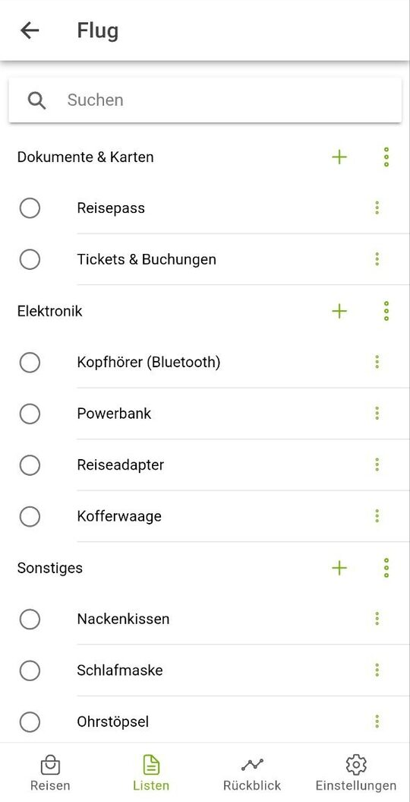
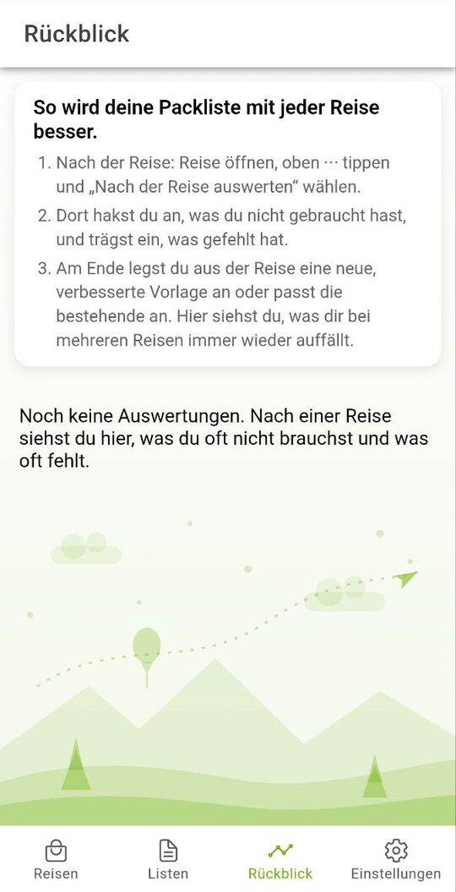

Koffer packen, ohne dass dir am Flughafen etwas einfällt
Socken, Ladekabel, Pass – und hast du die Blumen gegossen? Die Packlisten-App Quiravel hält alles fest, was mit muss und was vor der Abreise noch zu tun ist. Auf dem Handy, ohne Internet.
- Offline
- Ohne Konto
- Ohne Werbung
- Hell & Dunkel
- Deutsch, Englisch, Französisch
Welche Packliste brauchst du?
Jede Reise ist anders. Wähle den Anlass und sieh, wie Quiravel dafür packt:
Du musst nicht bei null anfangen: Die Vorlagen und Module bringen die üblichen Einträge mit. Du übernimmst nur, was du brauchst.
Packen wie im echten Koffer: Tasche in Tasche
Die Waschtasche ist erst abgehakt, wenn alles drin ist. Quiravel verschachtelt Einträge, jede Zeile hat ihren eigenen Haken und zählt für den Fortschritt. So siehst du auf einen Blick, was noch fehlt.
Vorlage wählen
Standard-Reise, Wochenende oder Geschäftsreise, oder deine eigene Liste.
Module hinzufügen
Zum Beispiel Strand oder Flug. Aus jedem Modul nimmst du nur die Einträge, die du brauchst.
Beim Packen abhaken
Der Fortschritt zeigt, wie weit du bist.
Waschtasche 2 von 3
- Zahnbürste
- Zahnpasta
- Duschgel
So sieht Quiravel aus






Woran Reisende sonst scheitern – und was Quiravel dagegen tut
Etwas Wichtiges vergessen
Ladekabel, Reisepass, Medikamente: Die Vorlagen erinnern an die Klassiker.
Falsche Kleidung
Typische Temperaturen und Regentage fürs Reiseziel, ohne Internet. Regenjacke oder Badebekleidung erscheinen nur, wenn sie zum Wetter passen. Mehr dazu: Packliste nach Wetter.
Zu schwer fürs Handgepäck
Gewichte pro Eintrag und ein Limit, etwa 8 kg. Die App warnt bei Überschreitung.
Handgepäck packenJeder packt für sich
Personen und Haustiere haben eigene Listen mit eigenem Abhak-Stand. Gemeinsames zählt einmal.
Familienurlaub planenZuhause vergessen
Müll rausbringen, online einchecken: Aufgaben mit Frist, auf Wunsch mit Benachrichtigung.
Aufgaben vor der AbreiseJedes Mal von vorn
Alte Reisen lassen sich als neue verwenden. Im Rückblick markierst du, was du nicht gebraucht hast, und übernimmst das in deine Vorlagen.
Deine Reisepläne bleiben bei dir
Quiravel braucht keine Internetverbindung, kein Konto und zeigt keine Werbung. Die Daten bleiben auf deinem Gerät. Weil es keine Cloud gibt, sicherst du selbst: Du speicherst alle Daten als Datei und stellst sie bei Bedarf wieder her. Packlisten verschickst du als Text oder PDF.
Details stehen in der Datenschutzerklärung von Quiravel.
Die Wetterangaben sind Durchschnittswerte vieler Jahre und keine Vorhersage.
Häufige Fragen
Wie erstelle ich eine Packliste für den Urlaub auf dem Handy?
Wähle in Quiravel eine Vorlage wie Standard-Reise, Wochenende oder Geschäftsreise, ergänze Module wie Strand oder Flug und hake die Einträge beim Packen ab. Jede Reise hat ihre eigene Liste mit Fortschritt.
Funktioniert die Packlisten-App ohne Internet?
Ja. Quiravel braucht keine Internetverbindung. Auch die Wetterangaben sind fest eingebaut und stammen aus Klimamittelwerten. Sie sind keine Vorhersage.
Kann ich das Gewicht meines Handgepäcks im Blick behalten?
Ja. Du hinterlegst Gewichte pro Eintrag und ein Limit, zum Beispiel 8 kg. Quiravel rechnet die Summe und warnt bei Überschreitung. Die Gewichte sind Schätzwerte.
Kann ich für Familie und Haustiere getrennte Listen führen?
Ja. Jede Person und jedes Tier bekommt eine eigene Liste mit eigenem Abhak-Stand. Gemeinsame Dinge zählen einmal für alle.
Erinnert mich die App an Aufgaben vor der Abreise?
Ja. Aufgaben wie Müll rausbringen oder online einchecken haben eine Frist vor der Abreise. Auf Wunsch erinnert dich Quiravel per Benachrichtigung.
Was kostet Quiravel und was passiert mit meinen Daten?
Quiravel ist kostenlos und ohne Werbung. Es braucht kein Konto, die Daten bleiben auf deinem Gerät, und Sicherung, Wiederherstellung und Dunkelmodus sind immer frei. Für erweiterte Planungsfunktionen ist eine Pro-Version vorgesehen.